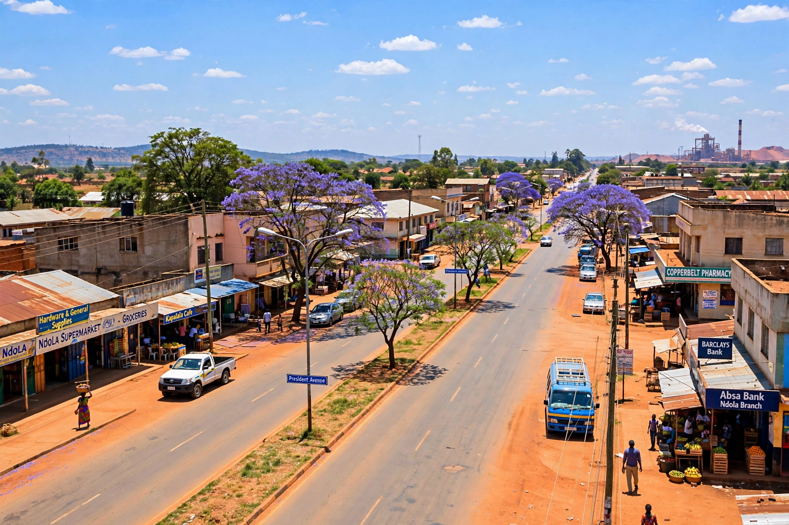

| Ndola | |
|---|---|
 | |
| Country | Zambia |
| Province | Copperbelt Province |
| Population (2010) | 455,194 |
| Elevation | 1,300 m |
Ndola is the third largest city in Zambia and the capital of Copperbelt Province. It lies some 10 kilometres south of the border with the Democratic Republic of the Congo and is an important commercial, mining and industrial centre.
Founded in 1904 as a trading post on the site of a slave-trading tree, Ndola grew with copper mining from the 1920s. It became the commercial hub of the Copperbelt, though mining administration centred on Kitwe. The Dag Hammarskjöld Memorial, marking the 1961 plane crash that killed UN Secretary-General Dag Hammarskjöld near Ndola, lies nearby.
Historically copper refining, cement, and industry dominated. After copper price declines, Ndola diversified into trade, fuel storage for the Tazama pipeline, and services. Simon Mwansa Kapwepwe International Airport serves the city.
Set on gentle hills of the Copperbelt plateau with a subtropical highland climate, warm wet summers and dry mild winters.